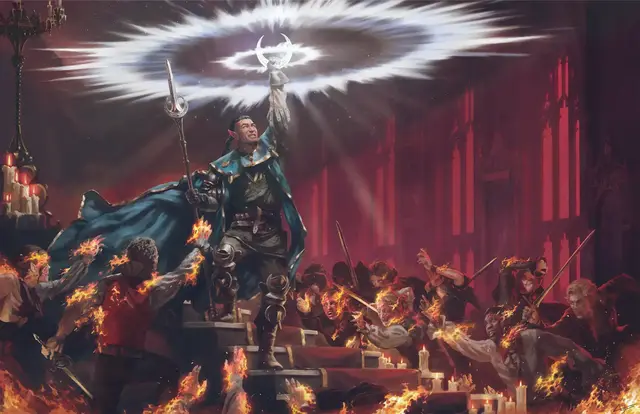

Дневной свет
Daylight
3 уровень, Воплощение

Время сотворения 1 действие
Дистанция 60 футов
Компоненты В, С
Длительность 1 час
Классы Друид, Жрец, Паладин, Следопыт, Чародей
Подклассы круг земли (друид), домен света (жрец), небожитель (колдун)
Из точки, выбранной вами в пределах дистанции, распространяется сфера света с радиусом 60 футов. Сфера излучает яркий свет и тусклый свет в пределах ещё 60 футов.
Если выбранная вами точка находится на предмете, который вы держите или который никто не несёт или носит, свет исходит из предмета и перемещается вместе с ним. Если полностью накрыть источник света непрозрачным предметом, например, чашей или шлемом, свет будет заблокирован.
Если часть области этого заклинания накрывает область тьмы, созданной заклинанием с уровнем не выше 3-го, заклинание, создавшее тьму, рассеивается.